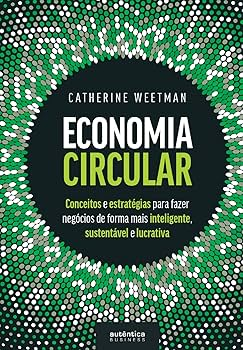
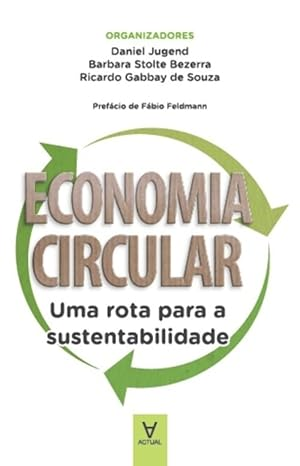
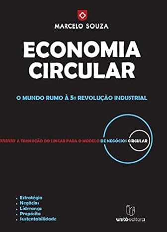

VIDEOS
O que é economia circular e como ela pode resolver a atual crise do lixo?
Economia Circular
4 formas de fazer a economia circular
Envie novos recursos!
LIVROS
Economia Circular
Conceitos e estratégias para fazer negócios de forma mais inteligente, sustentável e lucrativa
Economia Circular
Uma Rota Para a Sustentabilidade
Economia Circular
O mundo rumo à quinta revolução industrial
LISTAS
Embalagens Sustentáveis
- Marcas que proporcionam embalagens retornáveis ou biodegradáveis.
- Produtos que não possuem embalagem ou com embalagens reutilizáveis.
- Itens que vendem refis.
Materiais para Reutilizar e Reciclar
- Identificar materiais comuns que podem ser reutilizados: vidro, alumínio, papelão e plásticos.
- Arranjar maneiras de reciclá-los ou usá-los em novos produtos, como porta-lápis, vasinhos de plantas, brinquedos, entre outros.
Materiais para Reutilizar e Reciclar
- Identificar materiais comuns que podem ser reutilizados: vidro, alumínio, papelão e plásticos.
- Arranjar maneiras de reciclá-los ou usá-los em novos produtos, como porta-lápis, vasinhos de plantas, brinquedos, entre outros.
Como implementar seu lar?
- Criar composteiras caseiras para os resíduos orgânicos.
- Kits de cultivo e montagem de hortas verticais.
Iniciativas para comunidades
- Feiras de trocas, como roupas, livros e objetos.
- Coleta comunitária de resíduos orgânicos.
- Hortas comunitárias.
SITES
Ecostartup Simulador
Oferecem um simulador para visualizar como práticas de economia circular podem ser aplicadas na área de negócios.
- "Design regenerativo".
- Ciclos de produtos.
simulador.ecostartup
Ellen MacArthur Foundation
Oferecem tutoriais, estudos de caso e recursos educativos na implementação práticas circulares em diversas áreas.
ellenmacarthurfoundation
Zero Waste Lab
Oferecem workshops e guias sobre compostagem, reciclagem e fabricação de produtos sustentáveis, focando em diminui o desperdício e reaproveitar materiais locais.
zerowastelab